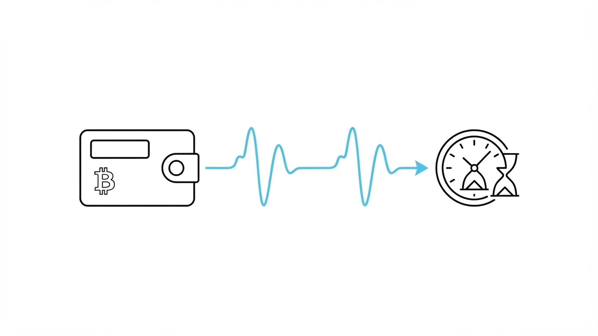

Every inheritance protocol has to answer one question that Bitcoin, on its own, cannot: how does it know when you're gone?
Traditional systems answer it the traditional way. A death certificate. A hospital record. A family member who calls the lawyer. A court that opens probate. A chain of humans, each verifying the previous one, each an opportunity for error, delay, or abuse.
For a protocol that has to survive decades, span jurisdictions, and never trust anyone, this is not an option. So Bitcoin After Life inverts the question. It never tries to detect death. It waits for you to show that you're alive — and if you stop, it eventually lets go.
The mechanism that does this is called Check Alive. To understand it, you first need one idea that sits at the heart of the whole protocol: once a will is signed and handed to the Will-Executors, it cannot be taken back. It can only be beaten.
The wrong way to know
Before looking at how BAL does it, it's worth being honest about how it doesn't.
A naive protocol would ask you to check in on a website. Every month, log into a dashboard, click a button, prove you're around. Miss too many check-ins and the inheritance executes.
This is how many custodial "dead man's switch" services operate, and it has problems that disqualify it for Bitcoin-native inheritance:
- It requires an account. An identity, an email, a password, a server that knows who you are. Everything BAL was built to avoid.
- It puts someone else in charge of the clock. The service sends the reminders, decides whether they were answered, and decides when you are presumed dead. It becomes a single point of failure — and of abuse.
- It usually runs on a short leash. A monthly check-in means a hospital stay or a long trip can be enough to trigger an inheritance while you're still alive.
The right question
BAL asks something different. Not "is this person dead?" — impossible to answer without either surveillance or a trusted witness — but "has the owner of this wallet come back and said: not yet?"
And the only way to say "not yet" is with the one thing only you have: the keys to your wallet.
The rule everything depends on
An inheritance transaction is a normal Bitcoin transaction, fully signed by you, with a locktime: the network refuses it until the delivery date. Once you send it to your Will-Executors, it lives on independent servers you don't control. You can't recall it, and you can't make them forget it — nor should you have to trust them to.
So there are only two ways to change a will that has already been handed out, and they are not symmetric.
Bringing the date closer is free. The plugin builds a new version of the will, dated one day earlier than the one the Will-Executors already hold, and asks you to sign it. Nothing is broadcast today. When the time comes, the newer transaction becomes valid first; a Will-Executor broadcasts it to earn its fee, and it spends the coins. The older transaction, dated a day later, now points at coins that no longer exist — and every node on the network rejects it. No server makes that decision. Bitcoin's rule against double-spending does.
This is also how every ordinary change to a will is handled. Each time you close Electrum, the plugin checks your coins, your balance and your heirs. If anything has changed, it updates the will automatically — anticipated by one day — and you confirm it with your signature. That covers four situations:
- you received funds, which the old will doesn't include;
- you spent funds — your payment has already moved some of the coins the old will pointed to, so that version could never be executed anyway;
- you added, removed or changed an heir, or the share assigned to one;
- you brought the delivery date forward.
None of these needs an extra on-chain transaction from BAL. Only one thing does: pushing the date later.
Pushing the date further away costs a transaction. A later-dated will can never beat an earlier one: the old transaction would simply become valid first, and a Will-Executor still holding it would broadcast it. So before the date can move out, the old will has to be voided. The plugin's Invalidate command makes a real on-chain transaction that changes the coins the old will points to — which turns every copy of it into a worthless piece of data — and then a new will with the later date is signed and distributed. That invalidation is a normal Bitcoin transaction, and you pay a miner fee for it.

Keep that asymmetry in mind, because it is exactly what Check Alive is built on.
How Check Alive actually works
Check Alive is a warning window before your delivery date, and you choose how long it is — six months, a year — or you set it as a fixed date. It's available in the plugin's advanced mode.
Each time you close Electrum, the plugin checks where you stand. As long as today is before the start of that window, nothing special happens: ordinary changes are handled the usual way, anticipated by one day. Once you're inside it — the final stretch before delivery — the plugin tells you the Check Alive threshold has passed and prepares an Invalidate for you. Sign it, and the old will is voided on-chain and a new one, with a later date, is distributed.
Here is how it plays out with a delivery date two years away and Check Alive set to six months — so the window opens after eighteen months:

| What you do | What happens |
|---|---|
| You use and close Electrum during the first 18 months | Nothing special — you're before the threshold; routine updates just anticipate the will by a day |
| You close Electrum in the last 6 months before delivery | The threshold has passed: the plugin asks you to invalidate the old will and push the date out |
| You stop using Electrum | Nothing postpones the will. On the delivery date, the Will-Executors broadcast it |
The plugin can also export calendar reminders spread across that final window, the last one the day before delivery — reminders that live in your own calendar, not on anyone's server.
As long as you keep coming back and accept the prompt when the window opens, your will never executes. Stop coming back, and the last date you committed to stands.
The plugin never does any of this on its own. It asks; you sign. Your "not yet" is a Bitcoin transaction signed with your own keys — about the hardest proof of life there is to forge.
What Check Alive is not
It is worth stating clearly what this mechanism does not claim to be.
It is not a definitive proof of life. If someone else gains control of your wallet, they could accept the prompt too — the protocol can't tell who is at the keyboard. It isn't detecting death; it's drawing an inference from the fact that someone holding your keys came back and said "not yet". That's why the security of your seed remains the foundation of everything.
It is not a legal document. No court will accept "the owner stopped postponing" as evidence of anything. The inheritance executes because the cryptography allows it, not because a judge has ruled on your fate.
It is not a substitute for a will in the traditional sense. If you have other assets, dependents, or legal obligations, you still need the normal legal instruments. BAL handles what it handles: the Bitcoin, cleanly, on time, without a custodian.
Why this matters more than it sounds
Every service that promises to "act on your death" faces the same choice: watch you, or trust someone to watch you. Watching you means surveillance — logins, heartbeats, biometrics, a growing dossier of your habits and health. Trusting a watcher means custody — a lawyer, a family member, a company, each a single point of failure and a single point of abuse.
BAL refused both. The check happens inside your own wallet, on your own machine. No account knows you exist. No server tracks when you were last seen. The proof that you're still here is a Bitcoin transaction signed with your keys — public, tamper-proof, and revealing nothing about who you are, where you live, or how you're doing.
You are not being watched. You are simply being not-inferred-dead — by a protocol that only learns you're alive when you choose to tell it.
The honest edge cases
- Every postponement costs a fee. Each one is an on-chain transaction. With a short window and a close delivery date, you'll pay more often. The manual recommends a rolling deadline instead — for example "always five years from today" — renewed every two or three years. Anticipating is free; postponing again and again is not.
- Every update brings delivery a day closer. Because each automatic refresh is anticipated by one day, years of normal use slowly pull the date in. The periodic renewal that moves it back out — a postponement — takes care of that.
- Long silences need long settings. A holder who deliberately doesn't open their wallet for years must set the delivery date far enough out — Check Alive only speaks up in the final stretch before it. Set it too close and the will could execute while you're still around. That's a configuration choice — but it's yours to get right.
- A locked-in delivery. Once you can no longer open your wallet, for any reason, the date freezes where you last left it. Set years ahead, your family may wait years; set months ahead, months. Choose deliberately.
- One seed, one device. Spending even a single satoshi with the same seed from another device changes the coins the will points to, and the network will reject the inheritance when a Will-Executor tries to broadcast it. Keep the inheritance wallet on one device, with the plugin.
None of these are surprises the protocol hides. They are the natural consequences of a mechanism that refuses to know more than it needs to.
The takeaway
Most inheritance systems answer "is this person dead?" by watching, by asking, or by trusting. BAL asks no one but you — and only you can answer, with your own signature.
Bringing your delivery closer is free and silent. Pushing it away costs a transaction, because the only way to take back a promise you've already handed out is to move the coins it points to. Check Alive simply reminds you, from inside your own wallet, when it's time to decide.
That is proof of life without surveillance. And it is, we think, one of the reasons a Bitcoin-native inheritance protocol was worth building in the first place.
Want the details? The manual covers Check Alive and postponing vs anticipating. Bitcoin After Life is open source and Bitcoin-only: explore the plugin and the server on Gitea.